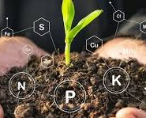
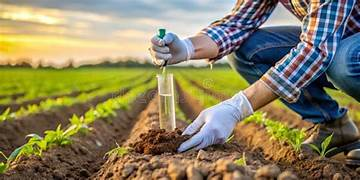

🌾 Smart Farmer Input System
Choose how you want to interact with AGRONEX
Text Query
Type your crop problem in your own language
Image Detection
Upload leaf image to detect disease instantly
Voice Input
Speak your problem using voice assistance

Soil Testing
Analyze soil health and get fertilizer recommendations
SMS Support
Send advisory through low-network SMS simulation
IVR Call
Voice-based farmer advisory call simulation
📝 Enter Your Problem
🌱 AI Advisory Result
Disease: Leaf Blight
Solution: Apply fungicide & maintain proper irrigation.
Our Services

Soil Analysis
Get detailed soil health insights and recommendations.
Crop Advisory
AI-powered crop suggestions and disease detection.
Weather Insights
Real-time weather updates for better planning.
Why Choose Agronex?
We combine AI technology with agricultural expertise to help farmers make smarter decisions, increase yield, and reduce risks.